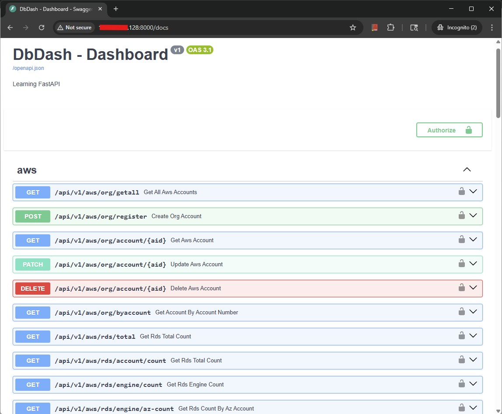

DBDash – Quick Installation Guide
This document explains how to install, build, and run the complete DbDash stack using Docker and Docker Compose.
The below bash script can be used to build the complete stack using Docker. The full explanation of each component can be found on this.
Prerequisites:
The following prerequisites must be meet for the successful creation of the DbDash Stack.
- Docker must be install and should be accessible to the user who is running to script
- Git must be installed, so that script can fetch the code from github.
- github.com must be accesible and it should be able clone repo
- The directory when the script is being run, the user must have
rwx privileges and should be atleast 10G free space.
- Api env file
.apienv should be there in directory script being run containing enviornment variables for api
Below is a simple example of the directory structure.
| [sumanadhikari@mysqlvm1 dbdash]$ pwd
/workspace/dbdash
[sumanadhikari@mysqlvm1 dbdash]$ ls -altr
total 20
drwxrwxr-x 7 sumanadhikari sumanadhikari 74 Dec 15 09:44 ..
-rw-rw-r-- 1 sumanadhikari sumanadhikari 370 Dec 16 02:50 .apienv
-rwxrwxr-x 1 sumanadhikari sumanadhikari 4173 Dec 16 08:17 dbdash.sh
[sumanadhikari@mysqlvm1 dbdash]$
|
Quick Installation Script
1
2
3
4
5
6
7
8
9
10
11
12
13
14
15
16
17
18
19
20
21
22
23
24
25
26
27
28
29
30
31
32
33
34
35
36
37
38
39
40
41
42
43
44
45
46
47
48
49
50
51
52
53
54
55
56
57
58
59
60
61
62
63
64
65
66
67
68
69
70
71
72
73
74
75
76
77
78
79
80
81
82
83
84
85
86
87
88
89
90
91
92
93
94
95
96
97
98
99
100
101
102
103
104
105
106
107
108
109
110
111
112
113
114
115
116
117
118
119
120
121
122
123
124
125
126
127
128
129
130
131
132
133
134
135
136
137
138
139
140
141
142
143
144
145
146
147
148
149
150 | #!/bin/bash
function log_message() {
local message="$1"
local timestamp=$(date '+%Y-%m-%d %H:%M:%S')
echo -e "[${timestamp}] ${message}"
}
function check_required_utils() {
local missing_utils=()
# List of required utilities
local utils=(
"docker"
"tee"
"date"
"which"
"git"
)
log_message "[info] Checking required utilites.."
for util in "${utils[@]}"; do
if ! command -v "$util" >/dev/null 2>&1; then
missing_utils+=("$util")
else
log_message "[info] $util found..."
fi
done
if [ ${#missing_utils[@]} -ne 0 ]; then
log_message "[error] The following required utilities are missing:"
for util in "${missing_utils[@]}"; do
log_message "[error] - $util missing.."
done
log_message "[error] Please install the missing utilities before running this script."
return 1
fi
log_message "[info] All required utilities are present."
return 0
}
function check_dir_permissions() {
local dir="$1"
log_message "[info] Testing permissions for: $dir"
if ! mkdir -p "$dir"; then
log_message "[error] Cannot create directory $dir"
exit 1
fi
local tmpfile="$dir/tmpfile_$$.txt"
if ! touch "$tmpfile"; then
log_message "[error] Cannot write to directory $dir"
exit 1
fi
if ! chmod -R 777 "$dir"; then
log_message "[error] Cannot change permission for directory $dir"
rm -f "$tmpfile"
exit 1
fi
rm -f "$tmpfile"
log_message "[info] Testing permissions for: $dir was successful.."
}
function clone_git_repo(){
git_repo="$1"
log_message "[info] Checking repository accessibility... $git_repo"
if ! git ls-remote "$git_repo" >/dev/null 2>&1; then
log_message "[error] Repository not reachable or does not exist: $git_repo"
exit 1
fi
log_message "[info] Cloning repository ... $git_repo"
if ! git clone "$git_repo"; then
log_message "[error] $git_repo Cloning failed.."
#exit 1
fi
if [ ! -d "dbdash/.git" ]; then
log_message "[error] Clone verification failed..."
exit 1
fi
log_message "[info] Repository cloned successfully..."
}
function create_stack() {
log_message "[info] Starting to create DbDash Stack"
# Create directories
mkdir -p ./dbdash-repo/init-seed/ \
./dbdash-repo/pg_data \
./dbdash-api || {
log_message "Failed to create directories..."
exit 1
}
# Copy database Dockerfile
log_message "[info] Copying Database Dockerfile..."
cp ./dbdash/database/Dockerfile ./dbdash-repo || {
log_message "Failed to copy database Dockerfile..."
exit 1
}
# Copy database seed file
log_message "[info] Copying Database seed file..."
cp ./dbdash/database/init_seed.sql ./dbdash-repo/init-seed/ || {
log_message "Failed to copy database seed script..."
exit 1
}
# Copy main Docker Compose file
log_message "[info] Copying main stack compose file..."
cp ./dbdash/dbdashcompose.yml ./ || {
log_message "Failed to copy main docker compose file..."
exit 1
}
# Copy env file for API
log_message "[info] Copying env file for API..."
cp .apienv ./dbdash-api/.env || {
log_message "Failed to copy API env file..."
exit 1
}
# Build and start the stack
log_message "[info] Building the stack..."
docker compose -f dbdashcompose.yml up -d || {
log_message "Failed to start Docker stack..."
exit 1
}
log_message "[info] DbDash stack created successfully."
}
check_required_utils
log_message "[info] Cleaning up old images and directories"
sudo rm -rf dbdash-repo
sudo rm -rf dbdash-api
rm -rf dbdash
rm -rf dbdashcompose.yml
check_dir_permissions "dbdash-repo"
clone_git_repo "https://github.com/dralmostright/dbdash.git"
docker rmi dbdash-api
docker rmi dbdash-ui
create_stack
docker ps -a
docker logs --tail 50 dbdash-repo
docker logs --tail 50 dbdash-api
docker logs --tail 50 dbdash-ui
|
Quick Installation log
Your execution log's should look like below for successful installation.
1
2
3
4
5
6
7
8
9
10
11
12
13
14
15
16
17
18
19
20
21
22
23
24
25
26
27
28
29
30
31
32
33
34
35
36
37
38
39
40
41
42
43
44
45
46
47
48
49
50
51
52
53
54
55
56
57
58
59
60
61
62
63
64
65
66
67
68
69
70
71
72
73
74
75
76
77
78
79
80
81
82
83
84
85
86
87
88
89
90
91
92
93
94
95
96
97
98
99
100
101
102
103
104
105
106
107
108
109
110
111
112
113
114
115
116
117
118
119
120
121
122
123
124
125
126
127
128
129
130
131
132
133
134
135
136
137
138
139
140
141
142
143
144
145
146
147
148
149
150
151
152
153
154
155
156
157
158
159
160
161
162
163
164
165
166
167
168
169
170
171
172
173
174
175
176
177
178
179
180
181
182
183
184
185
186
187
188
189
190
191
192
193
194
195
196
197
198
199
200
201
202
203
204
205
206
207
208
209
210
211
212
213
214
215
216
217
218
219
220
221 | [sumanadhikari@mysqlvm1 dbdash]$ ./dbdash.sh
[2025-12-16 23:20:41] [info] Checking required utilites..
[2025-12-16 23:20:41] [info] docker found...
[2025-12-16 23:20:41] [info] tee found...
[2025-12-16 23:20:41] [info] date found...
[2025-12-16 23:20:41] [info] which found...
[2025-12-16 23:20:41] [info] git found...
[2025-12-16 23:20:41] [info] All required utilities are present.
[2025-12-16 23:20:41] [info] Cleaning up old images and directories
[2025-12-16 23:20:41] [info] Testing permissions for: dbdash-repo
[2025-12-16 23:20:41] [info] Testing permissions for: dbdash-repo was successful..
[2025-12-16 23:20:41] [info] Checking repository accessibility... https://github.com/dralmostright/dbdash.git
[2025-12-16 23:20:41] [info] Cloning repository ... https://github.com/dralmostright/dbdash.git
Cloning into 'dbdash'...
remote: Enumerating objects: 6354, done.
remote: Counting objects: 100% (158/158), done.
remote: Compressing objects: 100% (54/54), done.
remote: Total 6354 (delta 59), reused 130 (delta 52), pack-reused 6196 (from 2)
Receiving objects: 100% (6354/6354), 53.70 MiB | 3.50 MiB/s, done.
Resolving deltas: 100% (3818/3818), done.
[2025-12-16 23:20:58] [info] Repository cloned successfully...
Error response from daemon: No such image: dbdash-api:latest
Error response from daemon: No such image: dbdash-ui:latest
[2025-12-16 23:20:58] [info] Starting to create DbDash Stack
[2025-12-16 23:20:58] [info] Copying Database Dockerfile...
[2025-12-16 23:20:58] [info] Copying Database seed file...
[2025-12-16 23:20:58] [info] Copying main stack compose file...
[2025-12-16 23:20:58] [info] Copying env file for API...
[2025-12-16 23:20:58] [info] Building the stack...
[+] Running 3/3
! ui Warning pull access denied for dbdash-ui, repository does not exist or may require 'docker login': denied: requested access to the resource is denied 0.8s
! db Warning pull access denied for dbdash-repo, repository does not exist or may require 'docker login': denied: requested access to the resource is denied 0.8s
! api Warning pull access denied for dbdash-api, repository does not exist or may require 'docker login': denied: requested access to the resource is denied 0.9s
[+] Building 70.9s (35/35) FINISHED
=> [internal] load local bake definitions 0.0s
=> => reading from stdin 1.38kB 0.0s
=> [ui internal] load build definition from Dockerfile 0.0s
=> => transferring dockerfile: 492B 0.0s
=> [db internal] load build definition from Dockerfile 0.0s
=> => transferring dockerfile: 312B 0.0s
=> [api internal] load build definition from Dockerfile 0.0s
=> => transferring dockerfile: 348B 0.0s
=> [api internal] load metadata for docker.io/library/python:3.11-slim 1.0s
=> [db internal] load metadata for docker.io/library/postgres:17 1.0s
=> [ui internal] load metadata for docker.io/library/nginx:alpine 1.0s
=> [ui internal] load metadata for docker.io/library/node:20 1.0s
=> [api internal] load .dockerignore 0.0s
=> => transferring context: 2B 0.0s
=> [api 1/5] FROM docker.io/library/python:3.11-slim@sha256:158caf0e080e2cd74ef2879ed3c4e697792ee65251c8208b7afb56683c32ea6c 7.9s
=> => resolve docker.io/library/python:3.11-slim@sha256:158caf0e080e2cd74ef2879ed3c4e697792ee65251c8208b7afb56683c32ea6c 0.0s
=> => sha256:1733a4cd59540b3470ff7a90963bcdea5b543279dd6bdaf022d7883fdad221e5 29.78MB / 29.78MB 2.6s
=> => sha256:72cf4c3b83019e176aba979aba419d35f56576bbcfc4f7249a1ab1d4b536730b 1.29MB / 1.29MB 0.2s
=> => sha256:4d55cfecf3663813d03c369bcd532b89f41cf07b65d95887ef686538370a747c 14.36MB / 14.36MB 0.7s
=> => sha256:158caf0e080e2cd74ef2879ed3c4e697792ee65251c8208b7afb56683c32ea6c 10.37kB / 10.37kB 0.0s
=> => sha256:26fe52250f1b8012f5061c8f7228e6fca4f100aa3f99b41a8aa2608a42c5db43 1.75kB / 1.75kB 0.0s
=> => sha256:cb352e69d7b69f39dbc2cc35ecc34d01ca14439abc55911a5f7932f3dd6bd079 5.48kB / 5.48kB 0.0s
=> => sha256:3f0cdbca744e7bd0ce0ff6da73b9148829b04309925992954a314ba203f56e99 249B / 249B 0.4s
=> => extracting sha256:1733a4cd59540b3470ff7a90963bcdea5b543279dd6bdaf022d7883fdad221e5 2.7s
=> => extracting sha256:72cf4c3b83019e176aba979aba419d35f56576bbcfc4f7249a1ab1d4b536730b 0.2s
=> => extracting sha256:4d55cfecf3663813d03c369bcd532b89f41cf07b65d95887ef686538370a747c 1.7s
=> => extracting sha256:3f0cdbca744e7bd0ce0ff6da73b9148829b04309925992954a314ba203f56e99 0.0s
=> [api internal] load build context 0.0s
=> => transferring context: 145.01kB 0.0s
=> [ui internal] load .dockerignore 0.0s
=> => transferring context: 2B 0.0s
=> [ui build 1/6] FROM docker.io/library/node:20@sha256:4b4e58e59c5e042928790c6fccd8ad16da6296bcc2e9924c56fba84a8e5ff662 28.4s
=> => resolve docker.io/library/node:20@sha256:4b4e58e59c5e042928790c6fccd8ad16da6296bcc2e9924c56fba84a8e5ff662 0.0s
=> => sha256:e515aa06e178a3a8220d860c09e616c8ed461f216604eef30d2bd2c060afd9c4 2.49kB / 2.49kB 0.0s
=> => sha256:c8a14e7e1d5835a3952ac83c20b5a859d337b8e6cc1b2eb89f3f4e0125dd516a 6.75kB / 6.75kB 0.0s
=> => sha256:4b4e58e59c5e042928790c6fccd8ad16da6296bcc2e9924c56fba84a8e5ff662 6.41kB / 6.41kB 0.0s
=> => sha256:c8443a297fa42e27cb10653777dd5a53f82a65fbc8b2d33f82b8722199f941d3 48.48MB / 48.48MB 2.3s
=> => sha256:6ae8659f7a8d357662281a0f87eb293725bb75ffa6c7356c38567f557d8a1f11 24.03MB / 24.03MB 2.0s
=> => sha256:c237534654fe7a5c118fcee78652af952e57a4a07cc322c0ae3c367839bb0ccc 64.40MB / 64.40MB 5.8s
=> => sha256:e8d2a98f6bdfdbb1ba3c937c5e47cfa2cd11e74487543d277ca84f21f12ba393 211.46MB / 211.46MB 8.4s
=> => extracting sha256:c8443a297fa42e27cb10653777dd5a53f82a65fbc8b2d33f82b8722199f941d3 4.1s
=> => sha256:cf6f22e97faea04f5cd1a36488581b2a212c37a16d0686a72b6eea4914d0d458 3.32kB / 3.32kB 3.0s
=> => sha256:098202b7b5875d7f0cbee6a5da982f86c91ae03ec3358165a6e7f2a9a4dc003c 48.41MB / 48.41MB 5.6s
=> => sha256:385ae8352fab5a86959ee4e261e38f6c40a9f4f01ea464e10537c220e2fcf605 1.25MB / 1.25MB 6.1s
=> => sha256:3e90c76f37ac838b93ab517570c04763bfb894f8e194b9236f68c53550103871 445B / 445B 6.0s
=> => extracting sha256:6ae8659f7a8d357662281a0f87eb293725bb75ffa6c7356c38567f557d8a1f11 2.5s
=> => extracting sha256:c237534654fe7a5c118fcee78652af952e57a4a07cc322c0ae3c367839bb0ccc 4.9s
=> => extracting sha256:e8d2a98f6bdfdbb1ba3c937c5e47cfa2cd11e74487543d277ca84f21f12ba393 10.9s
=> => extracting sha256:cf6f22e97faea04f5cd1a36488581b2a212c37a16d0686a72b6eea4914d0d458 0.0s
=> => extracting sha256:098202b7b5875d7f0cbee6a5da982f86c91ae03ec3358165a6e7f2a9a4dc003c 2.5s
=> => extracting sha256:385ae8352fab5a86959ee4e261e38f6c40a9f4f01ea464e10537c220e2fcf605 0.0s
=> => extracting sha256:3e90c76f37ac838b93ab517570c04763bfb894f8e194b9236f68c53550103871 0.0s
=> [ui internal] load build context 0.7s
=> => transferring context: 78.82MB 0.6s
=> [ui stage-1 1/3] FROM docker.io/library/nginx:alpine@sha256:052b75ab72f690f33debaa51c7e08d9b969a0447a133eb2b99cc905d9188cb2b 10.4s
=> => resolve docker.io/library/nginx:alpine@sha256:052b75ab72f690f33debaa51c7e08d9b969a0447a133eb2b99cc905d9188cb2b 0.0s
=> => sha256:052b75ab72f690f33debaa51c7e08d9b969a0447a133eb2b99cc905d9188cb2b 10.33kB / 10.33kB 0.0s
=> => sha256:e41316bb39937cebbf2674f26afe9e7bf94b4bbc6a301367891cf85843abfeda 2.50kB / 2.50kB 0.0s
=> => sha256:a236f84b9d5d27fe4bf2bab07501cccdc8e16bb38a41f83e245216bbd2b61b5c 10.98kB / 10.98kB 0.0s
=> => sha256:014e56e613968f73cce0858124ca5fbc601d7888099969a4eea69f31dcd71a53 3.86MB / 3.86MB 6.8s
=> => sha256:dfad290a5c259f8d1ec1938529f8ef602e335a26680497ad56d38e0727e1a10a 1.86MB / 1.86MB 6.5s
=> => sha256:5d2cc344426d3d91200b457a771ecfe976de824e165506f5cce5d6b863da1ca9 629B / 629B 6.8s
=> => sha256:abdece946203a31d986f184559f417a33c3a8936a80153b2f0ffa208af4a0d48 954B / 954B 7.1s
=> => extracting sha256:014e56e613968f73cce0858124ca5fbc601d7888099969a4eea69f31dcd71a53 0.4s
=> => sha256:51c30493937c33bd8b568d8aed09d9596f558d08877b05a5e1855516aba05e1f 403B / 403B 7.1s
=> => sha256:ad5b65da02cfbd43daa87443b87051f3816a10eb7719938d8cb9a96ee828d471 1.21kB / 1.21kB 7.5s
=> => sha256:fc13532503d72b70e7dd276ae52f2743b14326b83c31935c86d7477c66019dea 1.40kB / 1.40kB 7.3s
=> => extracting sha256:dfad290a5c259f8d1ec1938529f8ef602e335a26680497ad56d38e0727e1a10a 0.2s
=> => sha256:136bc6976c2023e3363e66b88167d08019fece3e756c162c58754e3819bf4063 17.26MB / 17.26MB 8.3s
=> => extracting sha256:5d2cc344426d3d91200b457a771ecfe976de824e165506f5cce5d6b863da1ca9 0.0s
=> => extracting sha256:abdece946203a31d986f184559f417a33c3a8936a80153b2f0ffa208af4a0d48 0.0s
=> => extracting sha256:51c30493937c33bd8b568d8aed09d9596f558d08877b05a5e1855516aba05e1f 0.0s
=> => extracting sha256:ad5b65da02cfbd43daa87443b87051f3816a10eb7719938d8cb9a96ee828d471 0.0s
=> => extracting sha256:fc13532503d72b70e7dd276ae52f2743b14326b83c31935c86d7477c66019dea 0.0s
=> => extracting sha256:136bc6976c2023e3363e66b88167d08019fece3e756c162c58754e3819bf4063 1.8s
=> [db internal] load .dockerignore 0.0s
=> => transferring context: 2B 0.0s
=> [db 1/2] FROM docker.io/library/postgres:17@sha256:dca7512acaa113409df7e40d977d801e53c0c8088e45d4311a45b4065ccfdcd3 23.0s
=> => resolve docker.io/library/postgres:17@sha256:dca7512acaa113409df7e40d977d801e53c0c8088e45d4311a45b4065ccfdcd3 0.0s
=> => sha256:dca7512acaa113409df7e40d977d801e53c0c8088e45d4311a45b4065ccfdcd3 10.23kB / 10.23kB 0.0s
=> => sha256:26bb28d37ad007df8a35e13201caa21ba593a0e3994bcd930bb7ac10f7285b35 3.63kB / 3.63kB 0.0s
=> => sha256:6e8b59d5003cb4ae3f004703392edf481fa4959635c149520462e095efa31bf2 10.13kB / 10.13kB 0.0s
=> => sha256:1733a4cd59540b3470ff7a90963bcdea5b543279dd6bdaf022d7883fdad221e5 29.78MB / 29.78MB 2.5s
=> => extracting sha256:1733a4cd59540b3470ff7a90963bcdea5b543279dd6bdaf022d7883fdad221e5 2.7s
=> => sha256:c96d81f9e075622dd8281edd1f10d6e927b01a6538e74c658c36957ae5b34d50 1.17kB / 1.17kB 7.7s
=> => extracting sha256:c96d81f9e075622dd8281edd1f10d6e927b01a6538e74c658c36957ae5b34d50 0.0s
=> => sha256:03ed8dc0f72e37e62afa5b1c665f711dfc24e7fbe11b02274e6fac583aaf5729 6.44MB / 6.44MB 8.8s
=> => sha256:17c1d47a62446958337213d2b0979b6d352ec216a45fe1461918e4c85a0234dc 1.26MB / 1.26MB 8.6s
=> => sha256:63c4a8e10901736024f80c1dbbcc2ed85c9482c4ca1f70cf4d2078dcd5627d6d 8.20MB / 8.20MB 8.9s
=> => sha256:07c0e7a5fd20651148ea9148dfc4ad3c2530ce05c6a0f0a0d56c90127884f4ad 1.31MB / 1.31MB 9.0s
=> => extracting sha256:03ed8dc0f72e37e62afa5b1c665f711dfc24e7fbe11b02274e6fac583aaf5729 0.6s
=> => sha256:64010c9502d8276815e749c6984543206c50479fd28cb6f4749b86c95359f9ab 116B / 116B 9.1s
=> => sha256:6b12fd5de7966b374e106b2732b9686958048ce89d0cfbd41c322900192fdbfc 3.14kB / 3.14kB 9.2s
=> => sha256:cd828e6b8ac748ab91bd67aafb0ed0edebca909d79ee94201fae23b5b46bc5a1 114.10MB / 114.10MB 15.7s
=> => sha256:e8e96343c58fb443d47c5eebd8715d133efb42cae1e7c88cf8f573f8417311dc 10.33kB / 10.33kB 9.3s
=> => sha256:8f27e2ecde524d23e9eac6c5bb9f9e737c1cbafa1a899436ce308953f4038f7c 128B / 128B 9.5s
=> => sha256:521d2bc0f7769ad596b7e549fd861c39876f5c5671cb5d00f9faac27e717515f 167B / 167B 9.7s
=> => extracting sha256:17c1d47a62446958337213d2b0979b6d352ec216a45fe1461918e4c85a0234dc 0.1s
=> => sha256:94820472d21157be6588ae81fae9d5beb906ff2903718364ccf1f1a2e3be603b 5.84kB / 5.84kB 9.7s
=> => sha256:ffe9c8605fca08cfcef37b23e9d854c8036299bac225d6d11a684db4d5ca6316 184B / 184B 9.9s
=> => extracting sha256:63c4a8e10901736024f80c1dbbcc2ed85c9482c4ca1f70cf4d2078dcd5627d6d 0.8s
=> => extracting sha256:07c0e7a5fd20651148ea9148dfc4ad3c2530ce05c6a0f0a0d56c90127884f4ad 0.1s
=> => extracting sha256:64010c9502d8276815e749c6984543206c50479fd28cb6f4749b86c95359f9ab 0.0s
=> => extracting sha256:6b12fd5de7966b374e106b2732b9686958048ce89d0cfbd41c322900192fdbfc 0.0s
=> => extracting sha256:cd828e6b8ac748ab91bd67aafb0ed0edebca909d79ee94201fae23b5b46bc5a1 6.7s
=> => extracting sha256:e8e96343c58fb443d47c5eebd8715d133efb42cae1e7c88cf8f573f8417311dc 0.0s
=> => extracting sha256:8f27e2ecde524d23e9eac6c5bb9f9e737c1cbafa1a899436ce308953f4038f7c 0.0s
=> => extracting sha256:521d2bc0f7769ad596b7e549fd861c39876f5c5671cb5d00f9faac27e717515f 0.0s
=> => extracting sha256:94820472d21157be6588ae81fae9d5beb906ff2903718364ccf1f1a2e3be603b 0.0s
=> => extracting sha256:ffe9c8605fca08cfcef37b23e9d854c8036299bac225d6d11a684db4d5ca6316 0.0s
=> [api 2/5] WORKDIR /app 0.0s
=> [api 3/5] COPY requirements.txt . 0.0s
=> [api 4/5] RUN pip install --no-cache-dir -r requirements.txt 29.2s
=> [db 2/2] RUN apt-get update && apt-get install -y --no-install-recommends postgresql-server-dev-17 postgresql-17-cron postgresql-17-partman postgresql-contrib && rm -rf /var/lib/apt/lists/* 36.8s
=> [ui build 2/6] WORKDIR /app 0.0s
=> [ui build 3/6] COPY package*.json ./ 0.0s
=> [ui build 4/6] RUN npm install 10.3s
=> [api 5/5] COPY . . 0.1s
=> [api] exporting to image 11.7s
=> => exporting layers 11.7s
=> => writing image sha256:dfb915d59f7fb96559da5cf5405d1cbda5bb6ab33a4ab84ae4f1131f0f10e961 0.0s
=> => naming to docker.io/library/dbdash-api 0.0s
=> [ui build 5/6] COPY . . 0.8s
=> [ui build 6/6] RUN npm run build 16.4s
=> [api] resolving provenance for metadata file 0.0s
=> [ui stage-1 2/3] COPY --from=build /app/dist /usr/share/nginx/html 0.0s
=> [ui stage-1 3/3] COPY nginx.conf /etc/nginx/conf.d/default.conf 0.0s
=> [ui] exporting to image 0.3s
=> => exporting layers 0.3s
=> => writing image sha256:75de3f51dd70f5c2698b4ace484bc9e7ec71ae36595bbba2c9f21d3944ece495 0.0s
=> => naming to docker.io/library/dbdash-ui 0.0s
=> [ui] resolving provenance for metadata file 0.0s
=> [db] exporting to image 9.7s
=> => exporting layers 9.7s
=> => writing image sha256:297dd43f7e57507981362ed728cfd4e74b05f2fc4fda33b09a4f9c0e5d6b0c0c 0.0s
=> => naming to docker.io/library/dbdash-repo 0.0s
=> [db] resolving provenance for metadata file 0.0s
[+] Running 7/7
✔ dbdash-ui Built 0.0s
✔ dbdash-repo Built 0.0s
✔ dbdash-api Built 0.0s
✔ Network dbdash_app-network Created 0.1s
✔ Container dbdash-repo Started 0.3s
✔ Container dbdash-api Started 0.4s
✔ Container dbdash-ui Started 0.7s
[2025-12-16 23:22:11] [info] DbDash stack created successfully.
The files belonging to this database system will be owned by user "postgres".
This user must also own the server process.
The database cluster will be initialized with locale "en_US.utf8".
The default database encoding has accordingly been set to "UTF8".
The default text search configuration will be set to "english".
Data page checksums are disabled.
fixing permissions on existing directory /var/lib/postgresql/data ... ok
creating subdirectories ... ok
selecting dynamic shared memory implementation ... posix
selecting default "max_connections" ... 100
selecting default "shared_buffers" ... 128MB
selecting default time zone ... Etc/UTC
creating configuration files ... ok
running bootstrap script ... ok
/docker-entrypoint.sh: /docker-entrypoint.d/ is not empty, will attempt to perform configuration
/docker-entrypoint.sh: Looking for shell scripts in /docker-entrypoint.d/
/docker-entrypoint.sh: Launching /docker-entrypoint.d/10-listen-on-ipv6-by-default.sh
10-listen-on-ipv6-by-default.sh: info: Getting the checksum of /etc/nginx/conf.d/default.conf
10-listen-on-ipv6-by-default.sh: info: /etc/nginx/conf.d/default.conf differs from the packaged version
/docker-entrypoint.sh: Sourcing /docker-entrypoint.d/15-local-resolvers.envsh
/docker-entrypoint.sh: Launching /docker-entrypoint.d/20-envsubst-on-templates.sh
/docker-entrypoint.sh: Launching /docker-entrypoint.d/30-tune-worker-processes.sh
/docker-entrypoint.sh: Configuration complete; ready for start up
2025/12/16 17:37:11 [notice] 1#1: using the "epoll" event method
2025/12/16 17:37:11 [notice] 1#1: nginx/1.29.4
2025/12/16 17:37:11 [notice] 1#1: built by gcc 15.2.0 (Alpine 15.2.0)
2025/12/16 17:37:11 [notice] 1#1: OS: Linux 5.4.17-2102.201.3.el8uek.x86_64
2025/12/16 17:37:11 [notice] 1#1: getrlimit(RLIMIT_NOFILE): 1048576:1048576
2025/12/16 17:37:11 [notice] 1#1: start worker processes
2025/12/16 17:37:11 [notice] 1#1: start worker process 29
2025/12/16 17:37:11 [notice] 1#1: start worker process 30
[sumanadhikari@mysqlvm1 dbdash]$ docker ps
CONTAINER ID IMAGE COMMAND CREATED STATUS PORTS NAMES
59d2c0852a1b dbdash-ui "/docker-entrypoint.…" 9 minutes ago Up 9 minutes 0.0.0.0:3000->80/tcp, [::]:3000->80/tcp dbdash-ui
834f3be15faf dbdash-api "fastapi run src --p…" 9 minutes ago Up 9 minutes 0.0.0.0:8000->8000/tcp, [::]:8000->8000/tcp dbdash-api
8f44511726ab dbdash-repo "docker-entrypoint.s…" 9 minutes ago Up 9 minutes 0.0.0.0:5432->5432/tcp, [::]:5432->5432/tcp dbdash-repo
5df2d87c9560 dpage/pgadmin4:latest "/entrypoint.sh" 9 days ago Up 52 minutes 443/tcp, 0.0.0.0:8080->80/tcp, [::]:8080->80/tcp pgadmin
[sumanadhikari@mysqlvm1 dbdash]$
|
Consoles
If your installation are successful you should see below URL's working.
Ui login page
API Docs

Database
The last part is you need to register the user using frontend and make the user active
| update apiusers set is_verified=true and role='admin' where email='<registered email>';
|
With this you should be able to use the DbDash.